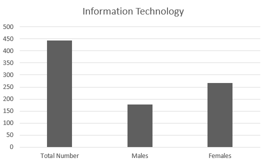

IT students get hands-on with coding, networking, cybersecurity, and app development. You’ll learn how to build tech systems, troubleshoot problems, and work with data. Whether you want to become a developer, an IT specialist, or dive deeper into tech, this course gives you a solid foundation
Enrollment and Distribution Statistics

- Enrolled Students
The chart illustrates the enrollment statistics for the Information Technology specialty. A total of 444 students are enrolled, with 178 males and 266 females. This shows a notable female representation in the IT field, reflecting an increasing interest among female students in technology-related careers, which could contribute to a more diverse workforce in the future.
The team collected this data from BTEC EMIS-vocational Dept, and it pertains only to Zarqa Governorate